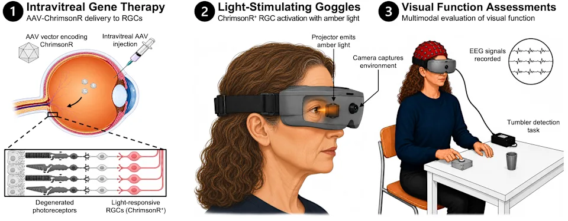

Alfred Nobel va ser el inventor de la dinamita i altres explosius, i amb això va fer fortuna. Però a causa del seu descobriment va esdevenir la mort massiva de gent, Alfred Nobel arrepentit, va decidir dedicar tot el seu patrimoni a premiar tots els anys a aquelles persones que contribuissin a la societat amb descobriments en àmbits com la medicina, física, química...
KARL DEISSEROTH, PETER HEGEMANN i GEORG NAGEL van descobrir una proteïna, la Canalrodopsina en unes algues que podien reaccionar a la llum. Aixo va crear un nou camp de coneixement: la Optogenètica, que permet introduir aquesta proteïna senssible a la llum dins de cèl·lule com les neurones i controlar-les amb llum. Aplicant llum a certes regions del cervell, podem activar o desactivar zones del cervell i per tant veure les seves funcions.
Relacionat amb el Nobel de medicina es va publicar el 8 d'octubre a la revista New England Journal of Medicine un article on persones cegues van recuperar parcialment la visió. L'article es titula Optogenetic Therapy for Restoring Aspects of Visual Function
A l'article anterior a deu pacients cecs s'els injecta un virus que conté un tros d'ADN anomenat chrimsonR que produeix una canalrodopsina modificada dins les cèl·lules ganglionars de la retina. Això vol dir que les persones cegues que no tenen que notenen les c`l·lules cons (sensibles al color) ni les cèl·lules bastons (sensibles a la llum) ara tenen unes cèl·lules sensibles a la llum que reaccionen a la llum a 590 nm. Els pacients necessiten per veure unes ulleres de llum àmbar que transformaran tota la llum que rep en una longitud d'ona de 590 nm.
